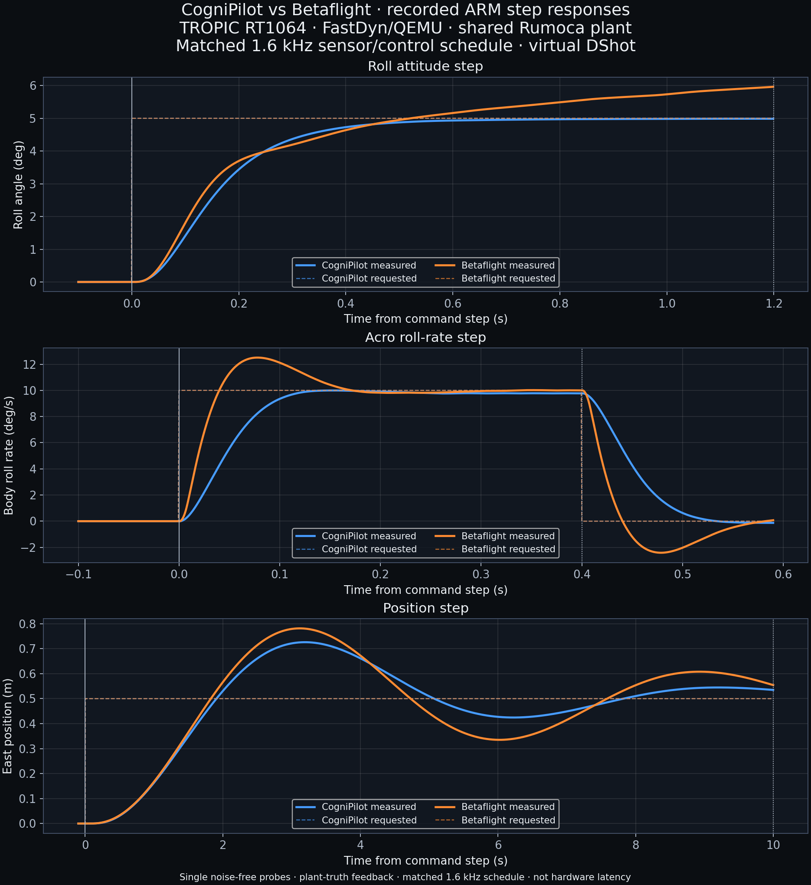

PURT · one figure-eight lap · Betaflight / CogniPilot
Loading the shared course…
Updated benchmark: a shared offboard position controller sends attitude and thrust commands to Betaflight ANGLE and CogniPilot ATTITUDE modes, with rate feed-forward added offboard as a tilt lead (ω/K). Onboard control equations remain upstream; both inherit gains selected by the earlier native step-response rule; current ARM tuning still requires qualification. Emulator I/O patches remain. The 40-second target is for commissioning; it is not a fastest-setting result.
The original commissioning baselines are back in the main playback controls: one 10 × 10 m lap at 2 m, plus recorded takeoff and landing. These retain their original firmware, motor protocols and timing; they are not the new rate-matched step tests.
View selected flight replay ↓ · Earlier native 40 s recordings ↓
Rebuilt TROPIC RT1064 firmware in FastDyn/QEMU, using the same Rumoca plant and matched virtual DShot frame encoding and a verified 1,600 Hz sensor/control schedule: roll attitude, Acro body-rate, and east-position steps. Blue: CogniPilot. Orange: Betaflight. Dashed lines: requested commands.
Loading recorded step-test outcomes…

| Test / stack | 10–90% rise | 5% settling | Overshoot | Flight outcome |
|---|
Single noise-free positive-axis probes, existing gains, offboard tilt lead disabled. These measure closed-loop motion response, not CPU or physical driver latency. Both now use virtual DShot frames with telemetry off. Both use a 625 µs sensor/control period (1,600 Hz), with latest radio commands delivered on common sensor boundaries. Both simulation builds explicitly match estimator and attitude-controller release rates too, including Acro mode. Firmware counters and raw motor traces verify the rates. Sensor representation, filters and internal receiver processing still differ; electrical DShot timing and hardware latency are not simulated. No winner or full tuning qualification is claimed.
Test definitions, source evidence and limitations · Metrics and hashes · Download graph for slides
Earlier mixed-protocol tests and raw-data release · Previous DShot tests with unequal rates · Earlier figure-eight recordings below retain their original firmware and motor configurations.
33 s reference lap · 15/15 confirmation cases passed · 76 s full simulated flight. One 10 × 10 m figure-eight at 2 m altitude, TROPIC RT1064 ARM firmware in FastDyn/QEMU with the shared Rumoca plant.
| Reference lap | Confirmation passes | Outcome |
|---|---|---|
| 33 s | 15 / 15 | Tracking and landing passed |
| 32 s | 2 / 15 | Maximum-error threshold exceeded in 13 cases |
At 33 s: RMS 0.281–0.284 m; worst maximum error 0.716 m. All confirmed flights landed and disarmed with stopped motors. Entire campaign: 42 runs, 27 passes, 15 retained failures; no report-level execution timeouts. Three assumed noise profiles × five seeds; noise-free seeds are repeatability checks, not independent trials.
Shortest confirmed reference in the tested offboard-lead configuration—not a global maximum or hardware qualification. ARM same-rule tuning prerequisites remain outstanding. Betaflight's OneShot125 diagnostic has not completed equivalent confirmations, so this is not a winner claim. Lead-off at 33 s passed 5/5 realistic-noise comparators with lower RMS (0.187–0.188 m); its fastest lap has not been searched here.
All 42 reports and search rule · Displayed flight reportEarlier prototypes retained for reference. These are not the current FastDyn ARM benchmark.
Why are the flight times equal? Both ARM commissioning recordings follow a prescribed 40 s figure-eight within the same 83 s takeoff-to-landing schedule. Equal target times do not mean equal maximum speed. Compare tracking error here; fastest accurate flight requires a separate speed sweep on these exact firmware versions.
New shared-controller firmware recordings. Select a stack below.
November 5: Betaflight TROPIC RT1064 commissioning is shown separately from the prior STM32F405 baseline. Exact sources, board target, adapter changes and limitations. Earlier tuning and speed-screening results have not yet been requalified on the new NXP firmware revision.
Loading the separate ARM firmware result…
FastDyn executes CogniPilot TROPIC, the new Betaflight TROPIC RT1064 build, and the retained Betaflight OMNIBUSF4 baseline in QEMU using the same generated controller and Rumoca plant. Betaflight uses virtual sensor, receiver, motor and clock interfaces; SPI/DMA and physical-board latency are not tested. Different firmware schedules and sensor quantization limit direct comparison. These are 40 s commissioning laps, not fastest-speed results. Historical Linux SIL recordings remain below. CogniPilot report · Betaflight report · Source and execution evidence
Both selected K = 6/s using the same gain grid and four signed 5° step probes under realistic diagnostic noise. Betaflight’s 10–90% rise times were 0.310–0.317 s; CogniPilot’s were 0.262–0.264 s. Both meet the predeclared 0.2–0.4 s band. This does not imply identical responses. Measurements · Rule
November 6 · Betaflight TROPIC RT1064 · FastDyn/QEMU · 10 × 10 m at 2 m. These are exploratory flights with inherited K = 6/s. Current-target tuning and onboard rate-command qualification remain open.
Baseline scheduling: Betaflight’s PWM configuration produced 500 motor updates per simulated second, with a 2 ms configured PID period. Its 8 kHz simulator exchanges are a different rate. Separate protocol diagnostic and source evidence. No hardware loop-speed claim.
Loading recorded attempts…
| Reference lap | Noise | Passed / runs | RMS range (m) | Worst error (m) | Failure reason |
|---|
Gates: RMS < 0.35 m, maximum < 0.75 m, complete course, zero tilt clamps and verified landing. A candidate requires all 15 noise/seed confirmations. No global maximum or hardware timing claim. Every retained attempt · PDF qualification checklist
Loading the retained speed-sweep results…
These speed sweeps execute native firmware, separately from the ARM recordings above. They find a confirmed reference duration in the tested grid, not a global maximum or hardware result. CogniPilot tracked better with lead disabled at the tested 33 s target; further lead validation is needed. Sensor and timing differences remain. All attempts and confirmation cells · Integration and remaining qualification
Statistics describe the mathematical reference, not measured aircraft performance. “Peak lateral acceleration” is the normal acceleration through a turn; horizontal acceleration also includes speed changes. The flight-altitude target is 2 m above the assumed floor origin, not a 2 m vertical excursion.
Loading generated-code check results…
The new course is not sent to the historical native-position adapters. The native harness includes sequential timestamped packets, ideal-attitude checks and shared takeoff/landing. The new derivatives and switch-off behavior are numerically checked. Hover throttle has been calibrated in the shared plant. Matched-rule tuning and native speed screening are recorded above. Actual rate-command diagnostics, ARM speed confirmation and hardware timing remain qualification work. Updated implementation, results and limitations. Requirements and implementation status · Every repository and its role · Shared configuration.
Loading retained historical prototype recordings…
| Stack / recorded variant | Result | Lap target | Duration | Tracking RMS / max |
|---|
Loading repeated-flight results…
| Stack / noise / FF | Passed | RMS mean / range | Worst maximum error |
|---|
Noise amplitudes and motor harmonics are assumed diagnostic models. These historical prototype gains predate the matched tuning above; these results are not a final speed ranking.
Both baseline flights follow a requested 40 s lap; equal scheduled duration does not mean equal maximum capability. Both use TROPIC RT1064 ARM firmware, the same Rumoca plant and generated position loop. Sensor delivery differs, and runner hashes are retained with each source.
| Recorded flight / source | Path (m) | Mean speed (m/s) | Peak speed (m/s) | Altitude RMS (m) |
|---|
*The 33 s recording is one successful flight; its full confirmation campaign failed. Speed is calculated from recorded ground-truth positions, not hardware sensor timing. These are existing recordings analyzed again, not new baseline flights.
ArduPilot 4.6.2 now runs on the existing STM32F427 / Cortex-M4 FastDyn target with a Rumoca-generated FMU. Estimator alignment now succeeds; restored normal arming checks expose logging/terrain-storage blockers. Filesystem adapter fixes build and pass native tests; QEMU qualification is queued. No figure-eight flight is available. PX4 TROPIC RT1064 firmware builds and reaches board initialization with simulation-only storage and clock models, and the no-SD variant now reaches the NuttX scheduler. Flight-module startup remains unverified. PX4 is not yet connected to the plant. These are integration attempts, not completed flights. Source and build evidence. Only recorded flights appear in the playback controls.
The black grid and green outline are retained. The approximate envelope is 53.34 × 28.956 × 9.144 m. Calibrated coverage, camera positions, floor origin and obstacle locations still need measurement. Facility evidence and on-site checklist.